MyMechanics User's Guide
MyMechanics is a feature-based parametric 3D mechanical design program. Put relations and dimensions on 2D sketches, stack features (extrude, revolve, fillet, holes …) into parts, join parts with mates into assemblies, and send them out as 2D drawings. The geometry is computed by the OpenCASCADE B-rep kernel. It runs with the same features on Windows, macOS and Linux desktops and in a web browser.
New to the program? Follow the tutorial document first (Help › Tutorial document, or the Tutorial button on the start page). It walks from a first part through a sweep, sheet metal, an assembly, a motion study, a drawing and a simulation, with a screen for every step.
1. The window
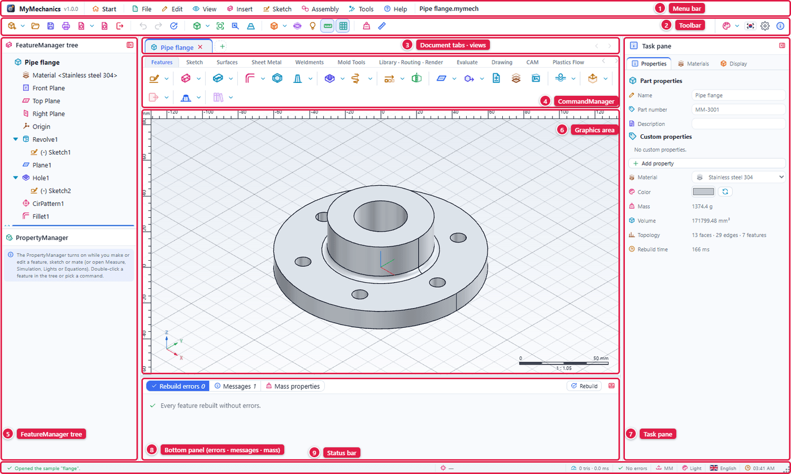
| Area | What it holds |
|---|---|
| Menu bar | File · Edit · View · Insert · Sketch · Tools · Help. Start next to the program name goes back to the start page. On the desktop this row is the window's title bar. |
| Toolbar | New part / assembly / drawing, open, save, print, export, undo, rebuild, view orientation, display style, section view, mass properties, measure, panels, theme, language, settings. |
| Document tabs | The parts, assemblies and drawings of the project. Click to switch, + adds a part. Front, top, right and isometric view buttons sit on the right. |
| CommandManager | Big command buttons in Features · Sketch · Evaluate · Assembly · Drawing tabs (only the tabs that fit the document). |
| FeatureManager tree (left) | The part's material, the standard planes (Front, Top, Right), the origin and the features in build order. A feature's sketch sits under it. Failed features are red, under-defined sketches get (-). Drag the blue rollback bar at the bottom to leave out the features below it for a while. |
| PropertyManager (bottom left) | The lower section of the left panel (the FeatureManager tree is above it; drag the line between them to share the height). It shows the options while a feature, sketch or mate is being made or edited, and only a hint when nothing is. ✔ (OK, Enter) / ✖ (Cancel, Esc) at the top. Pink selection boxes take the edges and faces picked in the graphics area. |
| Graphics area | The model, planes and sketches; the triad at the lower left (X red · Y green · Z blue). |
| Task pane (right) | Properties (name, part number, material, color, mass), the material list, display settings. For drawings: sheet, views and title block. |
| Bottom panel | Rebuild errors (failed features and how to fix them), messages, mass properties. |
| Status bar | Hints, the sketch's definition state, pointer coordinates, error count, unit (click to switch mm · cm · in), theme, language, clock. |
Mouse and view
- Left drag or middle drag: rotate · right drag / Shift+left / Ctrl+middle: pan · wheel: zoom at the pointer
- F: zoom to fit · Space: view orientation menu · Ctrl+1…7: front, back, left, right, top, bottom, isometric · Ctrl+8: normal to
- K: next display style (shaded with edges → shaded → hidden lines removed → hidden lines visible → wireframe)
- Faces, edges and planes under the pointer turn orange, selected ones blue. Ctrl or Shift+click selects several.
2. Start page
Cards can be dragged and resized from their lower-right corner (Arrange puts them back). They hold Quick actions (open, import STEP, continue the last work, settings …), Recent items, New project (part in mm or inches, assembly, drawing), 18 samples and the moving background. Whether the page shows at start is set by the check box at the top left or in Settings › Start page.
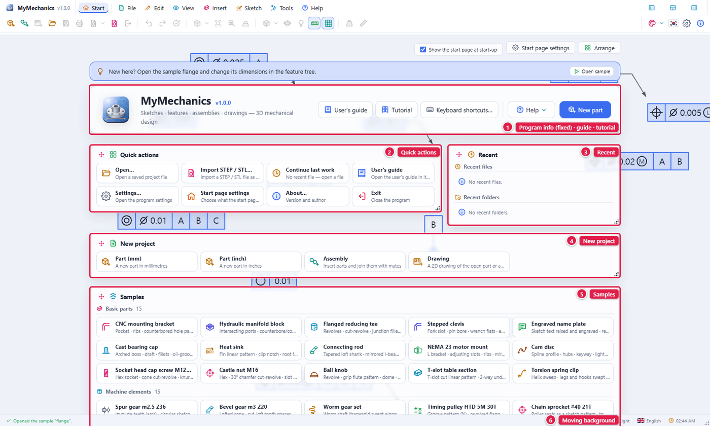
3. Making a part — step by step
- Click New part (Ctrl+N).
- Click Features › Sketch and choose the Top Plane (in the tree, the graphics area or the PropertyManager buttons). The view turns normal to the plane and a grid appears.
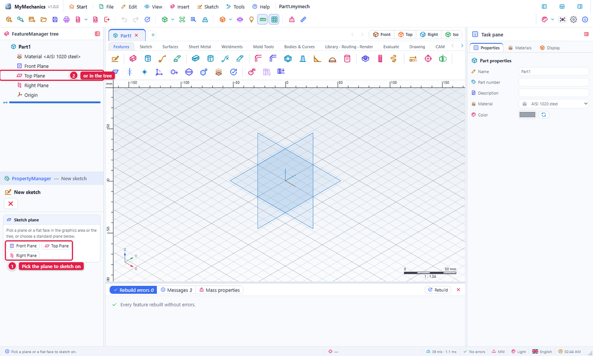
Picking the plane in the sketch PropertyManager - With Sketch › Center Rectangle, click the origin, then a corner. Ends snapping to a point (orange ring) get a coincident relation automatically.
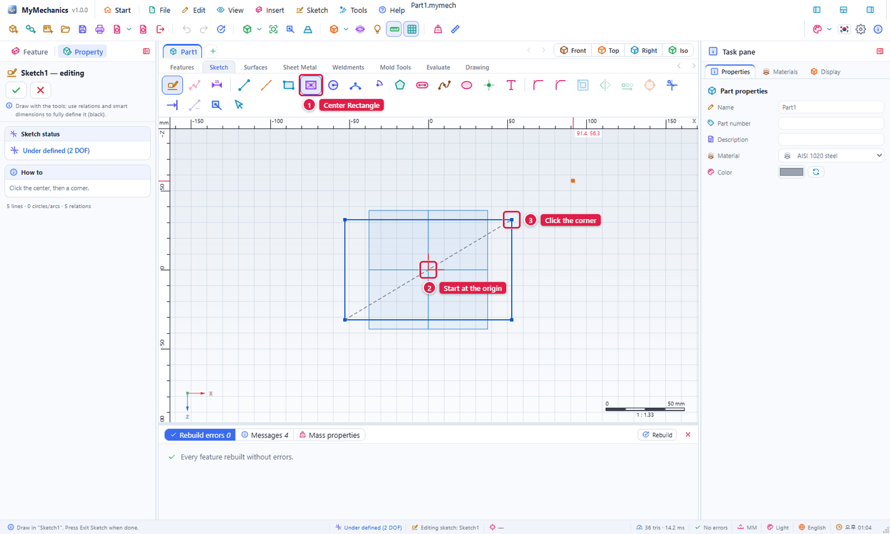
Click the origin, then a corner, to draw a center rectangle - With Smart Dimension (D), click the top line and enter
80, the right line and enter50. Black lines are fully defined (blue = can still move, red = over defined).
Dimensions 80 × 50 — the lines turn black and the status bar says "Fully defined" - Click Exit Sketch.
- Click Extruded Boss, enter a depth of
20and press ✔.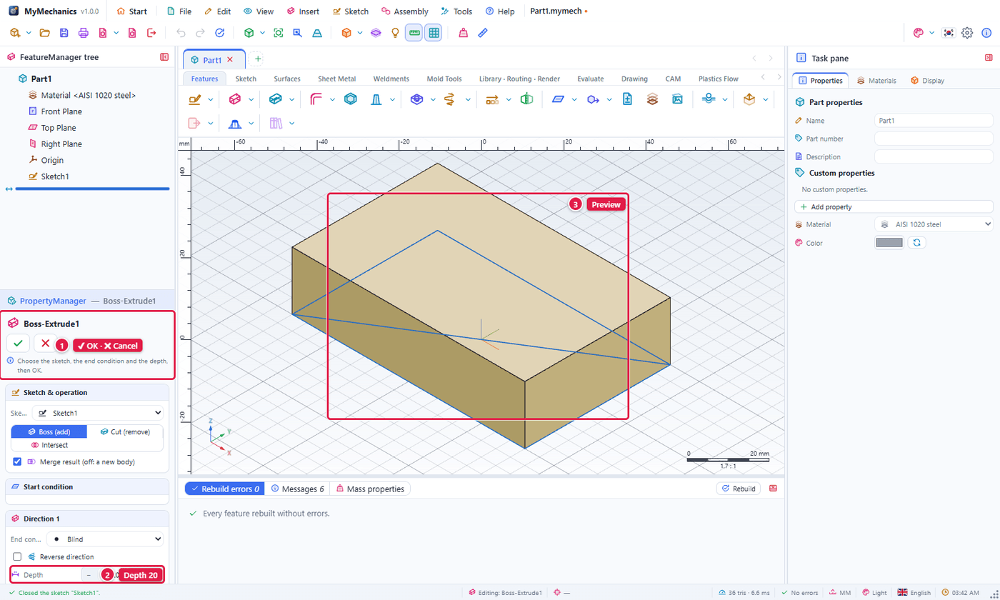
The extrude PropertyManager and its preview (depth 20) - Click Fillet, click the four vertical edges, radius
5, ✔.
Fillet: the picked edges collect in the pink selection box - Click Hole Wizard, choose size
M8and type Counterbore, then click the top face where the hole goes (about 15 mm along X from the origin). More clicks on the same face add more holes. The red preview is the hole. ✔.
Hole Wizard: counterbore M8, red preview - Select Hole1 in the tree, click Circular Pattern, axis
Y,4instances, ✔.
Circular pattern: axis Y, 4 instances - Save (Ctrl+S). One
.mymechfile holds the whole project.
To change a dimension or a feature's values, double-click the feature in the tree (or right-click › Edit feature). A sketch opens again for editing and every feature after it rebuilds on the new shape. The edges and faces picked for fillets, chamfers and shells are remembered by their geometry: when an earlier dimension changes, the nearest edge is found again.
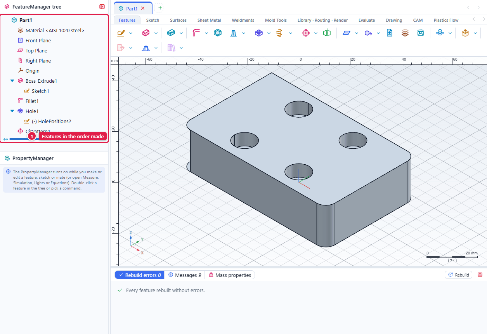
4. Sketches
| Tool | Key | How |
|---|---|---|
| Line | L | Click, click … to chain lines; click an existing point or press Esc to finish. Nearly horizontal or vertical lines get that relation. |
| Centerline | A construction line (dashed): an axis of revolution or symmetry. | |
| Corner / Center Rectangle | R | Two clicks; horizontal and vertical relations come with it. |
| Circle | C | Center, a point on the circle. |
| 3 Point / Centerpoint Arc | A | Start, end, a point on the arc / center, start, end. |
| Polygon | P | Center, a vertex; the number of sides is in the PropertyManager. |
| Straight Slot | Both end centers, then the width. | |
| Point | Hole positions and the like. | |
| Smart Dimension | D | One line = length, a circle = diameter, an arc = radius, two lines = distance (parallel) or angle, two points = distance. Double-click a dimension to change it. A dimension that would over define the sketch becomes a reference (driven) one, shown in brackets. |
| Spline | S | Click points in turn; Enter or Esc finishes, clicking the first point closes it. The curve passes through every point. |
| Ellipse | E | Centre, end of the major axis, a point for the minor axis. |
| Sketch Fillet / Chamfer | Click the corner where two lines meet; radius / distance in the PropertyManager. | |
| Offset Entities | O | Copies the selected lines, arcs and circles at a distance; joined lines stay joined. |
| Mirror Entities | Select entities and a centerline: mirrored copies with symmetric relations. | |
| Linear / Circular Sketch Pattern | Copies the selection by spacing and count (linear) or count and angle (circular, about the selected point). | |
| Trim Entities | T | Removes the clicked piece between crossings (a curve nothing crosses is deleted); a circle becomes an arc. |
| Extend Entities | X | Grows a line to the next entity. |
| Text | Places text where clicked (Roboto font, height in the PropertyManager); extrude, cut or wrap it to engrave or emboss. | |
| 3D Sketch | A path in space: click while switching between the Front, Top and Right planes, or type coordinates in the table. Lines or a smooth spline, open or closed; used for sweep paths, structural members and filled surfaces. | |
| For construction | Turns the selected lines and circles into construction geometry and back (construction geometry is not part of a profile). |
- With Select (S), drag points or lines: the relations are kept.
- With entities selected, the PropertyManager lists their existing relations (removable) and add relation buttons (horizontal, vertical, parallel, perpendicular, equal, tangent, concentric, coincident, midpoint, symmetric, collinear, fix).
- Number boxes take units and arithmetic:
25.4in,100/3,2*15. A dimension value like=Wlinks it to a global variable (shown with Σ). - Only closed contours make features; a closed contour inside another is a hole.

5. Features
| Feature | Notes |
|---|---|
| Extruded Boss / Cut | End conditions: Blind (depth), Through All, Through All - Both, Mid Plane. Direction 2 extrudes the other way too. A cut goes into the material by default. |
| Revolved Boss / Cut | Turns the sketch around its centerline (or a chosen line). 0.1–360°. |
| Fillet / Chamfer | Click edges, or click a face to add all of its edges. |
| Shell | Pick the faces to open and the thickness. |
| Hole Wizard | Hole, counterbore, countersink; ISO M3–M20 clearance sizes; through or blind (118° drill point). Click a flat face to place holes; the positions are kept in a "HolePositions" sketch. |
| Linear Pattern | Direction (X, Y, Z or an edge), spacing, count; Direction 2 for a grid. Copies features or the whole body. |
| Circular Pattern | Axis (X, Y, Z, or a circular or straight edge), total angle, count, equal spacing. |
| Mirror | About a standard plane, a reference plane or a flat face; features or the whole body. |
| Reference Plane | Offset from a plane or a face; used as a sketch plane. |
| Intersect extrude · drafted extrude | Set an extrude's operation to Intersect to keep only the overlap. Draft on tapers a blind extrude's sides. |
| Swept Boss / Cut | Sweeps a closed profile along a path (an open sketch or a helix). Sketch the profile at the start of the path, across it; turn on Frenet for helices. |
| Lofted Boss / Cut | Joins closed profiles on several planes in the order chosen. Ruled option. |
| Draft | Pick the neutral plane, then the faces to taper (0–45°). |
| Rib | Fills a plate of the given thickness from an open line drawn between walls toward the material. |
| Dome | A spherical cap of the given height on a planar face (or a dish). |
| Helix | A helix by plane, radius, pitch and revolutions; use it as a sweep path for springs. |
| Thread | Cuts a 60° V thread at a shaft end or hole rim (external / internal found automatically, M3–M24 pitches). A cosmetic thread only draws lines. |
| Wrap | Embosses / debosses a sketch from a plane beside a cylinder or a flat face (projected onto it). |
| Move/Copy Bodies · Scale · Split | Moves (or copies) the body, scales it, or splits it by a plane keeping one side or both (two bodies). |
| Insert Part · Cavity | Adds another part of the project to this one, subtracts it (a cavity for molds) or keeps the overlap. |
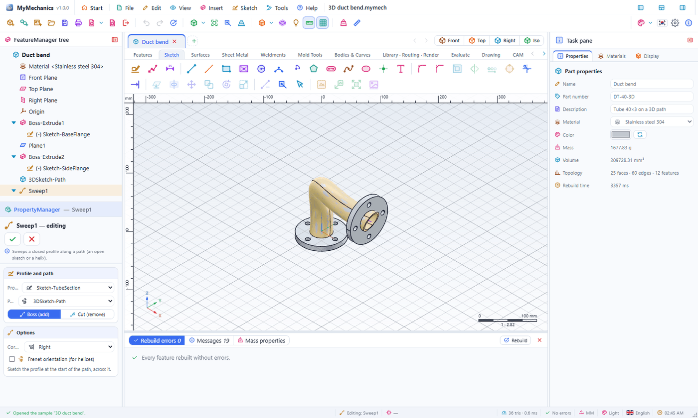

Tree right-click menu: edit feature, rename (F2), suppress / unsuppress, roll back to here, delete (features that use it go too). A failed feature turns red and the bottom panel's Rebuild errors says why and how to fix it; the other features still build.

6. Surfaces, sheet metal, weldments and mold tools
- Surfaces tab: extruded, revolved, planar and lofted surfaces, Boundary Surface (smooth between closed profiles, or bounded by open curves), Filled Surface (a patch over a hole's edges or a closed 3D sketch), offset faces, Trim Surface (cut by a plane or another surface, keeping one side), Knit (a closed set becomes a solid). Thicken turns a surface into a solid (side 1, side 2 or both). Surfaces show translucent teal.
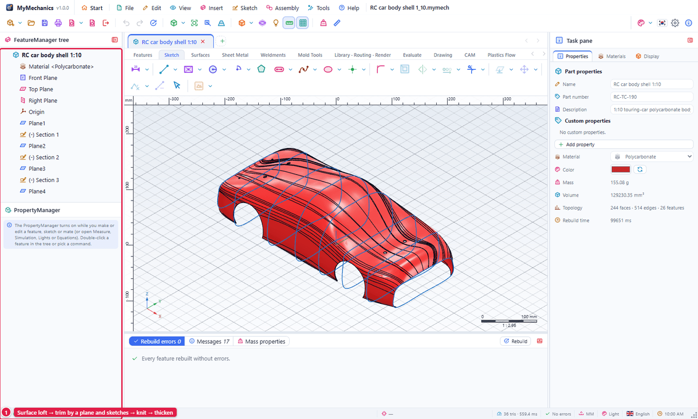
A car body shell: surface loft → trim → knit → thicken - Sheet Metal tab: Base Flange (closed sketch + thickness, bend radius, K-factor) → Edge Flange (pick a straight edge on the sheet's top face, angle, length) → Hem (the edge folded back 180°, closed or open) · Sketched Bend (bent by an angle along a line drawn on the sheet) · Jog (the far side raised by a height with two bends) → Flatten shows the flat pattern. Bend allowance = angle × (radius + K × thickness).

Sheet metal chassis: base flange · jog · sketched bend · edge flanges · hem 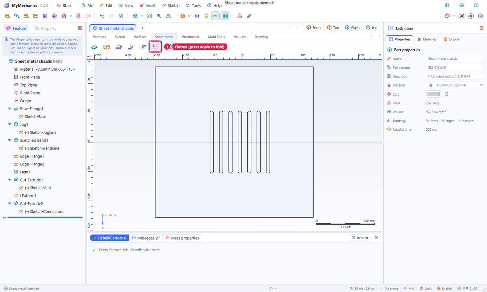
Flatten: the flat pattern with bend allowances - Weldments tab: put Structural Members (square / rectangular tube, pipe, round / square bar, angle, channel, I-beam, tee, any size) on a sketch of lines; Cut List gives each member's length and the total.
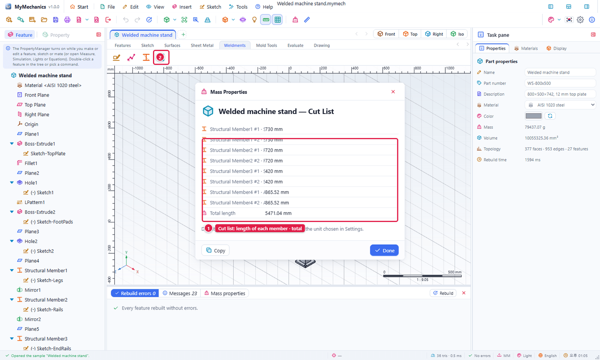
A welded machine stand and its cut list - Mold Tools tab: Draft Analysis (pull direction = the selected plane / face normal, Y by default: green positive draft, red negative, yellow insufficient), Draft, Parting Line (the edges where faces turn from facing the pull direction to facing away), Tooling Split (a mold block around the part split at the parting height, the part's shape taken out, pulled apart to be seen), Shrinkage Scale, Split, Cavity.

Draft analysis: green = positive draft, red = negative, yellow = not enough 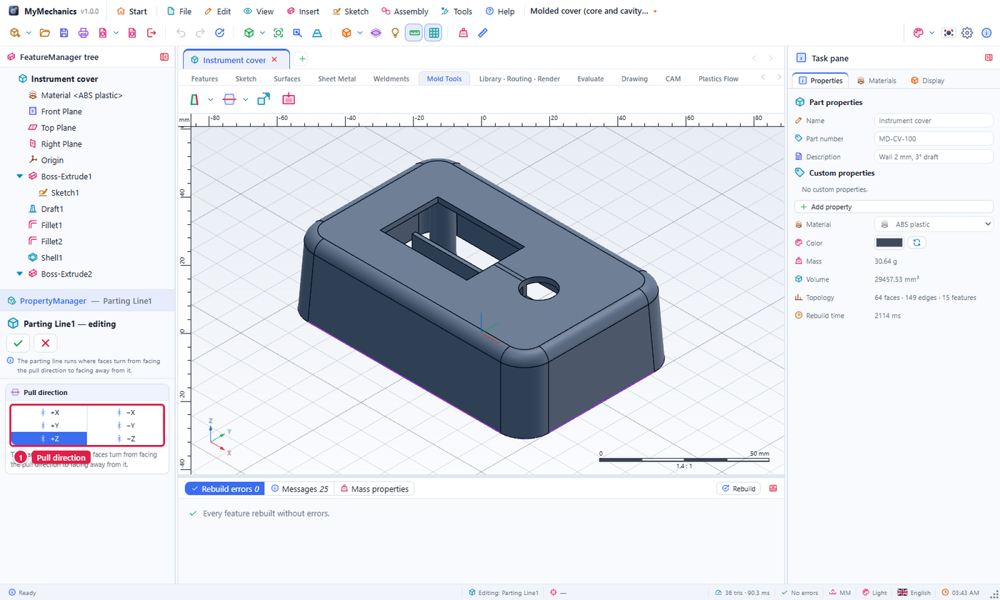
Parting line: edges where faces turn from front to back for the pull direction (purple) 
Core/cavity split: the mold block divided at the parting height and opened
Injection moulding: flow, mould cooling, fiber orientation and warpage
The Plastics Flow Study on the Injection Flow tab fills and packs the part from a resin (Cross-WLF viscosity, Tait PVT data), the process settings and the gates (click on the part or let it suggest one), and colours the part by fill time, pressure, flow-front temperature, frozen layer, packing pressure, shrinkage and sink, with weld lines and air traps marked. Three more steps can be added in the PropertyManager; they run after the fill in the same background job.
- Fiber orientation: with a glass fiber content (%) and aspect ratio, the orientation tensor during filling is computed with the Folgar–Tucker equation (hybrid closure) in layers through the wall. Near the walls (skin) the shear lines the fibers up with the flow; at the middle (core) a spreading flow turns them across. Colour the part by the alignment, the skin or the core.
- Mould cooling: serpentine channels are laid out in both mould halves (diameter, flow per channel, inlet temperature, pitch, cavity-to-axis distance, coolant, mould material), and the cycle-averaged heat transfer gives the mould wall temperature and the cooling time at each place. Each channel lists its Reynolds number (turbulent or not), the heat it removes, the coolant outlet temperature and the pressure drop, with warnings when the flow is not turbulent, the coolant warms more than 3 °C or a channel is too close to the cavity. The channels are drawn in the graphics area.
- Warpage: the part is meshed with tetrahedra and its free (3-2-1 held) deformation is solved from the initial strains left by differential shrinkage, differential cooling and orientation (fiber or molecular). The warpage of each cause and in total (after the even size change and the rigid motion are taken out) and the main cause are listed; Show deformed shape and Deformation scale exaggerate it.
The report (HTML) has tables for these steps too.
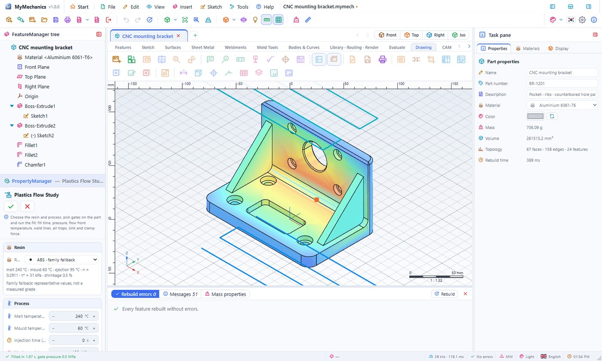

7. Equations, configurations and design tables
- Evaluate › Equations: make global variables (
W = 120,H = W / 2). Type=H - 5in a feature's value box to drive it. Functionssin cos tan sqrt abs min max round iif(condition, then, else),pi, other features' values (Boss-Extrude1.depth) and sketch dimensions (D1@Sketch1) can be used.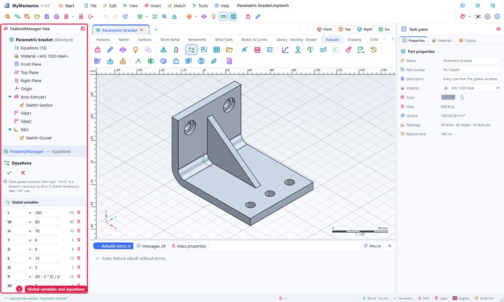
The equations PropertyManager: global variables and expressions - Evaluate › Configurations: each configuration has its own variable values and suppression states; suppressing while a configuration is active affects only it. The tree's top row shows the active configuration.

Configurations: turning on "Heavy duty" rebuilds the part with its values - Design table: export the configurations × variables (and
$STATE@Feature) table as CSV, edit it in a spreadsheet and import it to make configurations.
8. Materials, mass properties and simulation
In the task pane's Materials tab (or by double-clicking Material in the tree) choose one of 16 materials: steels, aluminium, brass, titanium, plastics and more. The density gives the mass and the color changes (the Properties tab can set a color of its own). Evaluate › Mass Properties shows the mass, volume, surface area, center of mass and bounding box. Measure gives the length, area or diameter of one face or edge, and the minimum distance and angle between two. Section view cuts the model with a plane; change its axis and position in the task pane's Display tab.

Evaluate › Simulation (Static) is a linear static stress analysis. Click the faces to fix and the loaded faces, give a force (N, along ±X, Y or Z) or a pressure (MPa) and Run. The body is coloured by von Mises stress (blue → red) and the maximum stress, maximum displacement and minimum factor of safety (yield ÷ stress) are listed; the deformed shape can be shown exaggerated. Set the study to Thermal for a steady-state temperature field (fixed-temperature faces, and faces with convection — film coefficient and ambient — radiation — emissivity and ambient: εσ(T⁴ − T∞⁴), solved by Newton steps — or heat power in W), or to Frequency for the natural frequencies and mode shapes with the fixed faces (pick a mode with its button). The analysis uses cube (voxel) elements, so a higher resolution is more accurate, and local stresses at corners can come out higher than real.


Stress linearisation (pressure-vessel check). On a static result, pick one wall surface and then the opposite one with the probes: along the line between them (the stress classification line) the stress is split into membrane (Pm), bending (Pb), membrane + bending, peak (F) and total, each as stress intensity (Tresca) and von Mises in MPa. Enter the allowable stress S below it (default: yield ÷ 1.5) to see the checks Pm ≤ S, Pm + Pb ≤ 1.5 S and total ≤ 3 S; a row that fails is red. If the line leaves the model you are asked to pick two points across a wall.


The flow study (external or internal) uses the lattice Boltzmann method for drag, lift, pressure drop and streamlines. External flow can add local refinement around the body, 1 to 3 levels: each level nests a block of half-size cells around the body, and the blocks and the grid outside exchange their solutions both ways until the drag changes by less than 0.5 %. The results list the blocks and the coupling sweeps, and say so when a block diverged because the grid outside is too coarse for the Reynolds number (use more cells). Maximum iterations per grid shortens the run.
9. Assemblies
- Click New assembly. The PropertyManager lists the project's parts and the sample parts. The first part is fixed at the origin (
(f)). - Assembly › Insert Components adds more parts (STEP files too).
- Click Mate and click faces of two different components. Two cylinders suggest Concentric, two planes Coincident; distance, angle, parallel, perpendicular and aligned / anti-aligned are there too. ✔.

The mate PropertyManager: cylindrical faces of two components → concentric - All mates are solved together. Fully positioned components have no prefix, those that can still move get
(-), conflicting mates turn red.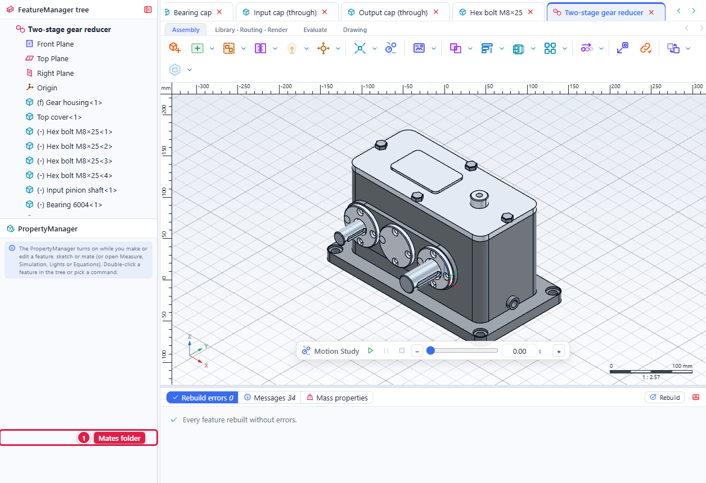
The assembly tree: (f) fixed, (-) can still move, the Mates folder - Interference Detection lists overlapping pairs and the overlapping volume.
Double-click a component to open its part tab. When a part changes, the assembly is solved again.
- Cam mate: pick the cam's flat face (its outline is the cam profile) and the follower's plane, cylinder or point; the follower stays on the cam profile (turn the cam in a motion study).
- Advanced mates: width (centred between two faces), symmetric (about a plane), limit distance / limit angle (free within a range), lock. Mechanical mates: gear (ratio), rack pinion (pitch radius), screw (distance per revolution), hinge. Switch with the Standard / Advanced / Mechanical buttons in the mate PropertyManager.
- Sub-assemblies: the Insert Components list also shows the project's other assemblies; they mate as one component and take one BOM row.
- Exploded view: spreads the components outward from the centre; click again to collapse, Delete Explode removes the steps.

The six-axis robot exploded
Standard parts library and smart fasteners
The Standard Parts Library on the Library · Routing · Render tab makes bolts, nuts, washers, bearings, pins, rings, keys, gears, pulleys and pipe fittings from the standards' size tables. Each item shows its standard number (for example ISO 4017 M8×30); threads are cosmetic or modelled.
Next to the ISO items there are DIN items; where DIN differs from ISO, they are made to DIN.
| DIN | Item | Differs from ISO in |
|---|---|---|
| DIN 933 / 931 | Hex bolt (fully / part threaded) | across flats M10 17, M12 19 (ISO 16, 18), head height; 931 thread length b = 2d + 6 (L ≤ 125), 2d + 12 (L ≤ 200) |
| DIN 934 | Hex nut | across flats as DIN 933, height m = 0.8 d |
| DIN 439 B | Thin hex nut | DIN across flats |
| DIN 912 | Socket head cap screw | same dimensions as ISO 4762 |
| DIN 7991 | Countersunk socket screw | head diameter (M10 20, ISO 10642 22.4) |
| DIN 7984 | Low head socket cap screw | head height (M10 6, ISO 4762 10) |
| DIN 125 A | Plain washer | same dimensions as ISO 7089 |
Smart Fasteners put bolts, washers and nuts of the right size and length into an assembly's holes; the DIN items can be chosen as the bolt and nut kinds too.
- Motion study: put a rotary (rpm) or linear (mm/s) motor on a component's cylindrical face and play. Components joined by gear, rack and screw mates follow; the time slider shows any moment.
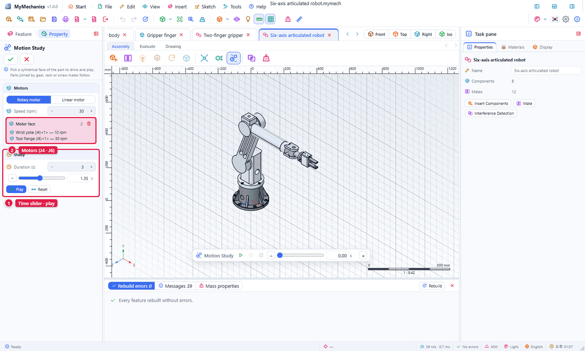
Motion study: J4 and J6 motors and the time slider
10. Drawings
From a part or an assembly, Drawing › Make drawing (or Standard 3 View) puts the front, top and right views and an isometric view on an A3 sheet (third-angle projection; first angle in Settings). The scale is chosen from the standard scales to fit the sheet. Hidden lines (dashed), overall dimensions and a title block (title, part number, material, mass, scale, drawn, checked, date, revision) are included. Drag views to move them; in the task pane set the sheet size (A4–A0, Letter, Tabloid), scale and projection, and add or remove views. Export DXF (layers VISIBLE, HIDDEN, BORDER, HATCH, NOTES, DIMENSIONS, BREAKS, TABLES — everything the sheet shows, hole and revision tables and break lines included) or SVG, or print (Ctrl+P).

- Section views (vertical / horizontal): the selected view cut through its middle, hatched, with the cutting line, arrows and letters (A-A). Detail view: a circled area enlarged 2× (B). Auxiliary view: seen from any direction (x, y, z).

Transmission shaft drawing: section A-A, detail B, GD&T - Annotations: note, balloon, geometric tolerance (14 symbols such as flatness, perpendicularity, position; ⌀, M / L modifiers, datums), datum, surface finish, center mark. Pick the command and click on the sheet, drag to move, edit in the task pane.
- BOM: on an assembly drawing, a table of item, part number, name, material and quantity above the title block.

Robot assembly drawing: bill of materials and balloons
11. View, lights and start page
- Rulers: screen-aligned scales along the top and left of the graphics area (1-2-5 steps) with the pointer's place marked in red and its values. In the front, top and right views the rulers say which axis (X, Y, Z) they run along.
- Coordinates: Z is up. Top = XY, Front = XZ (seen from −Y), Right = YZ (seen from +X). Dragging to rotate is a turntable about Z, so the view never turns upside down. Files made before (Y up) are turned to Z up when they are opened.
- Grid: fixed on the chosen plane — Top (XY, the default), Front (XZ) or Right (YZ). When zooming, its spacing is redrawn in 1-2-5 steps once the lines get too dense or too sparse on screen; every fifth line is darker (5 × 5 cells). Turn it on or off and choose its plane in View › Show.
- Scale bar: the bar at the lower right shows a length on screen and the screen scale (1 : n at 96 dpi). Drag it with the mouse to put it anywhere.

Rulers, grid, scale bar and axes - Lights (Evaluate tab or the View menu): ambient light (color, ground color, intensity), a camera light that follows the view (on/off, color, intensity), and directional, point and spot lights you add, each with color, intensity, position, target and cone angle. While the Lights page is open, drag a light's handle (the small sphere) in the graphics area to move it. Lights are saved in the project.
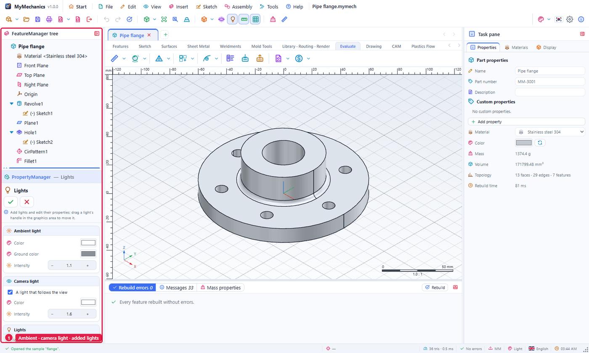
The lights PropertyManager - Panel buttons: the left, bottom and right panel toggles sit just left of the window's minimize button.
- Start page: the program information at the top is fixed (it cannot be moved or resized). The cards below are dragged to move and resized from their corner; Arrange lines them up in rows and columns keeping their sizes. There are 15 samples in each group.
12. Files
| Format | Use |
|---|---|
.mymech | The project (all parts, assemblies and drawings, JSON). On the desktop double-click it to open. |
STEP (.step, .stp) | Import (features can be added on the imported body) and export (assemblies keep each part's name and color). |
| STL | Export for 3D printing; import. |
IGES (.igs, .iges) | Import (surfaces sewn into a solid) and export (mm or in). |
| OBJ · PLY · glTF/GLB · 3MF · VRML | Mesh import (a closed mesh becomes a solid) and export (part colors kept). USDZ export only. |
| DXF · SVG | Drawing export. |
| CSV | Design table export and import. |
| PNG | A picture of the graphics area. |
In a browser with the File System Access API, files are saved straight back; otherwise they are downloaded.

13. Settings
Settings (Ctrl+,): General (language …), Start page, Theme (dark, light and your own), Font, Background, Modeling (length unit, decimal places, snap to grid, dimension entry, drawing projection, display style, planes / origin / sketches shown, perspective, curved surface quality), Recent items and Shortcuts.
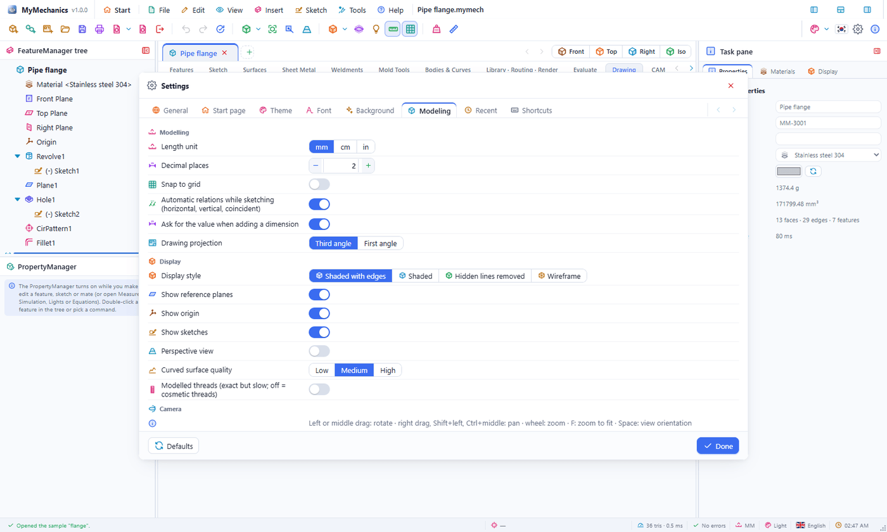
14. Shortcuts
| Keys | Command |
|---|---|
| Ctrl+N / O / S / Shift+S | New part / open / save / save as |
| Ctrl+I · Ctrl+P | Import STEP · print |
| Ctrl+Z / Y | Undo / redo |
| Ctrl+B | Rebuild |
| Enter / Esc | PropertyManager OK / Cancel |
| Delete · F2 | Delete · rename |
| F · Space · Ctrl+1–8 · K | Zoom to fit · view orientation menu · standard views · display style |
| L R C A P D T S | Sketch: line · rectangle · circle · arc · polygon · dimension · trim · select |
| E X O · Enter | Sketch: ellipse · extend · offset · finish spline |
| Ctrl+Shift+L · Ctrl+Shift+H · Ctrl+, · F1 | Language · start page · settings · user's guide |
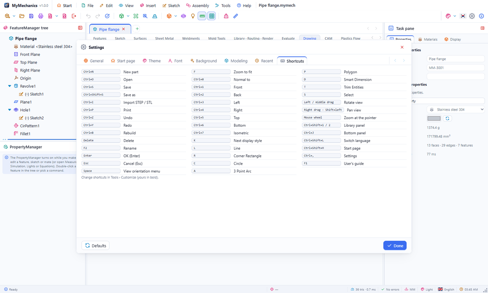
15. Vault (product data management)
A vault is a file store several people share. Only the person who checked a file out can change it, every check-in keeps a version, and files are released through approval. File › Vault Explorer (or the Evaluate tab) opens the vault explorer on the right of the work area; it works with no document open.

Making a vault and logging in
- Desktop: Open vault folder… opens an existing vault, New vault in folder… makes one. A local folder or one on a shared drive both work. The folder gets
vault.json(the index),files/(latest copies),history/(every version) and.locks/(lock files). - Web: the vault is kept in the browser (IndexedDB). Type a name and press Create.
- Whoever makes the vault is its first admin and sets a user name and a password (4 characters or more). Passwords are stored only as PBKDF2-SHA-256 hashes.
- You log in each time you open a vault; check-outs, approvals and change orders carry the logged-in name. Log out with the button in the header or on the Settings tab.
- Admins add users (name, password, role), change roles, reset passwords and disable users on the Settings tab. Users can change their own password.
| Role | Can |
|---|---|
| Viewer | look at and open files |
| Editor | add files, check out / in, submit for approval, raise change requests |
| Approver | what editors do + approve or reject files and change orders |
| Admin | everything + break locks, set users, revision scheme and data cards |
Check-in and check-out
- With a document open, Add to vault puts it in as version 1, Work in progress, the first revision (A or 01). The document records its vault file, so a local copy opened later is still known as that vault document.
- A vault document is read-only until you check it out. Check out and open (or Check Out from Vault) creates a lock file; nobody else can check the file out.
- Check In to Vault makes a new version (no change, no new version). With Keep checked out you go on working.
- Ctrl+S on a vault document asks: check in (keep checked out / release) or Save local copy. A document not checked out to you can only be saved as a local copy.
- Undo check-out releases the lock without checking in. An admin can break someone else's lock.
Versions, revisions and lifecycle
- The version goes up with every check-in (1, 2, 3 …); the revision (A, B, C … or 01, 02 …) only when a released file is revised. The revision scheme can change on the Settings tab until something is released.
- Work in progress → Pending approval → Released → Obsolete. Submit for approval needs the required data card fields (part number, description); Approve is done by an approver other than the submitter, once every file the file uses is released. Released files cannot be checked out; to Revise one, an approved change order with that file is needed.
- Changes tab: raise a change request (ECR); once approved, Make change order turns it into a change order (ECO). An order is submitted and needs the set number of approvals from other approvers. It closes when all its files are released again at a new revision.
References: using parts and assemblies of other files
- Open an assembly, pick a file in the explorer and press Insert from Vault: its part (or sub-assembly) comes in as a reference. The vault stores only the reference; opening the document reads the referenced file's content. A sub-assembly brings its parts along, but Where used / Contains list them only through that sub-assembly.
- Each reference follows the Latest version, the Released version or a Fixed version (Open document › vault references list).
- When a referenced file (or a file it uses) changes, the vault references list under the FeatureManager tree and the explorer show ⚠. Update References brings in the new content (undoable).
- A document that came in by reference cannot be changed here: check out its own file to change it.
Managing files
- The Where used and Contains tabs show the files that use a file and the files it uses, as trees.
- Rename also updates the reference names in the files that use it, as new versions (refused while one of them is checked out).
- Copy tree copies a file and the files it uses as new files that point at each other.
- Pack and Go collects a file and what it uses (optionally the drawings too) into a folder or a ZIP. References point at the new names, every file is filled in so it opens without the vault, and a
packandgo.jsonlist goes with them. Existing files are never overwritten. - The History tab compares two versions, opens an old version read-only, or rolls back to it (checked in as a new version).
- The BOM tab shows an indented BOM and a parts-only BOM (total quantities), with part numbers, revisions and states from the vault files.
- Search finds text in names, part numbers, descriptions, materials and properties; the filter button searches by part number, description, material, state and kind.
- Data cards: part number, description, material, project, vendor, cost, finish, due date, critical part (drawings also sheet size and checked by). Admins add fields on the Settings tab.
16. Tools: illustrations, electrical schematics, design checker, task scheduler, macros, markup
Technical illustrations
Tools › Technical illustration makes exploded views and assembly instructions from an assembly. Each view keeps its camera, explode distance and hidden parts; the views play one into the next, and item balloons are placed automatically. Export a single SVG picture or one HTML file that steps through the views.
Electrical schematics
Tools › Electrical schematic opens an A3 sheet over the graphics area. Pick a symbol in the palette (connector, terminal block, switch, push button, relay coil and contact, fuse, lamp, motor, resistor, diode, supply, ground) and click the sheet to place it on the 5 mm grid. The Wire tool joins pin to pin with an orthogonal wire. Dragging a symbol moves its wires with it, R turns it 90°, Delete removes, Esc cancels. The wheel zooms, a middle or right drag pans and F shows the whole sheet. Supplies of the same name and all grounds are one net, and wires are numbered per net. The check list shows open pins, duplicate tags and dangling wires; export SVG, a from–to list (CSV) and a parts list (CSV). Undo works as everywhere.
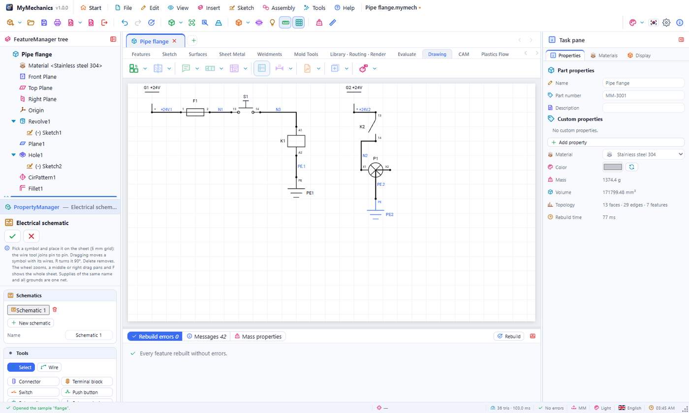
3D harness link. When a part of the project has an electrical harness route, the schematic PropertyManager lists it under 3D harness link. A symbol whose tag is the name of a harness connector (connectors such as X1 and X2, devices such as M1) is an end of the harness, its pins mapping in the symbol's pin order (connectors by number). Each net that joins two such pins is one harness wire, with the wire number, colour (a code such as RD or BU, or a word such as red) and size (1.5, 1,5 mm² or AWG 18 → the nearest standard size) from the schematic. The list shows wires missing from the harness, wires not in the schematic and wires whose colour or size differ, as well as nets that need a splice (three or more pins) and connectors the harness does not have. Send to harness sets the harness route's wires from the schematic (keeping the clips each wire passes) and rebuilds the part. Lengths from harness writes the routed 3D lengths on the schematic wires: the wire properties and the from–to list (the Length column of the CSV) show them. The other way round, Wires from schematic in the wire table of the harness route does the same while you edit the route.
Design checker
Tools › Design checker compares the project with a standard (a set of rules). The rules cover the document (units, names), parts (required properties, material, suppressed features, rolled back, rebuild errors, sketch definition, default feature names, smallest fillet, standard hole sizes), assemblies (a fixed component, mate errors) and drawings (drafting standard and projection, sheet size, title block, revision and date formats, standard scales, dimension precision, overridden dimensions, text height, dangling annotations). Turn rules on or off and click a rule's name to change its severity (error, warning, info) and values. Learn from project makes a standard from the open project; Save… / Load… share it as a .mmstd file. Check lists the findings by severity; click one to open its document and select the item. Items marked 🔧 are corrected one by one or with Correct all (one undo step), and Report (HTML)… saves the result.

Task scheduler
Tools › Task scheduler runs batch jobs over many files, now or on a schedule. Jobs: Export (parts and assemblies to STEP, IGES, STL, 3MF, GLB, OBJ; drawings to DXF, SVG), Import (model files to .mymech), Update properties (part and drawing properties, always or only where empty; values may use {file} {name} {project} {date}), Design check (an HTML report per file and a summary CSV), Rebuild (failed features logged, saved in the current format) and Create drawings (an ISO or ANSI drawing with the standard views for every part that has none). The files are a list, a folder (desktop: sub-folders and a name pattern) or the open document. Outputs go beside the sources or into a chosen folder, named like {name} - {doc}. Schedules are manual, once, daily, weekly (weekdays) or every N minutes; they run while the application is open, and a time missed while it was closed runs once when it next opens. The open document stays as it is during a run; every step is logged and the log exports as CSV.

Macros
Choose Tools › Macros › Record macro and work as usual: commands, picks in the graphics area, PropertyManager input, tree selection, document switches and sketch contents are recorded (● REC in the status bar). Stop macro turns the recording into JavaScript — lines of await mm.…(…) — and opens it in the Macro editor window. There you edit it, Run it (Ctrl+Enter), Stop it and Open… / Save… it (.mmjs). The console below shows the log and errors (click one to go to its line), and its prompt evaluates an expression at once. Hand-written macros can use loops and variables, read the model with mm.parts(), mm.feature(name), mm.project and mm.massProperties(), change it with mm.setParam(feature, key, value), mm.setVariable, mm.setProperty, mm.run(command) and mm.set/field/toggle/pm/accept, and use mm.log and mm.wait. Run macro… picks a file and runs it.

Building models from a macro. A macro can make and read the model directly, without going through the screen. Every call is one undo step; a call that fails stops the macro with the reason and the line.
| Area | Functions |
|---|---|
| Building parts | mm.sketch(plane, shapes, { name }) — the plane is 'front', 'top', 'right' or a plane feature's name; shapes are { rect: [width, height, cx, cy] }, { circle: [cx, cy, diameter] }, { line }, { arc }, { polygon }, { slot }, { polyline: [[x, y]…] }, { axis } (construction); mm.plane, mm.extrude(sketch, depth), mm.cut(sketch, 'through'), mm.revolve, mm.fillet(radius, edge test), mm.chamfer, mm.shell, mm.hole, mm.feature(type, values) |
| Geometry | mm.edges(test), mm.faces(test) — chosen by type, midpoint, direction and length (faces: centre, normal, area); mm.boundingBox(), mm.massProperties() |
| Feature tree | mm.features(), mm.suppress, mm.renameFeature, mm.deleteFeature, mm.errors() |
| Configurations, properties | mm.configurations(), mm.addConfiguration, mm.useConfiguration; mm.properties(), mm.customProperty, mm.setCustomProperty |
| Documents, assemblies | mm.documents(), mm.addPart, mm.addAssembly, mm.document, mm.components(), mm.insertComponent(part, [x, y, z]), mm.moveComponent, mm.interference() |
| Events | mm.on('change' · 'selection' · 'document', fn), mm.off, mm.events() — handlers stay until removed; a handler's error is logged in the console |
Custom properties. In the task pane's Properties tab, parts and assemblies take custom properties (name and value): add, edit and delete them there (the same data as mm.setCustomProperty in a macro).
Markup
Tools › Markup draws review notes over the graphics area of a part or assembly. The tools are navigate (turn the model without drawing), select and move, pen, highlighter, line, arrow (Shift snaps to 45°), rectangle, ellipse, revision cloud, text box and eraser, with eight colours, a line width and a text size. Drawing starts a markup on the current view; it is saved in the document with that view (the camera), its author and date. Choosing a markup in the list brings its view back with the drawing. Turn the view away and the drawing hides until you choose Back to the markup view. The select tool drags items, Delete removes them, and a double-click edits a text box. Each markup has a name, a status (open or resolved) and comments (author and time), and exports as a PNG picture (the view rendered at twice the size with the drawing on top) or a Review document (HTML) with the pictures, status and comments of all markups. Every edit can be undone.
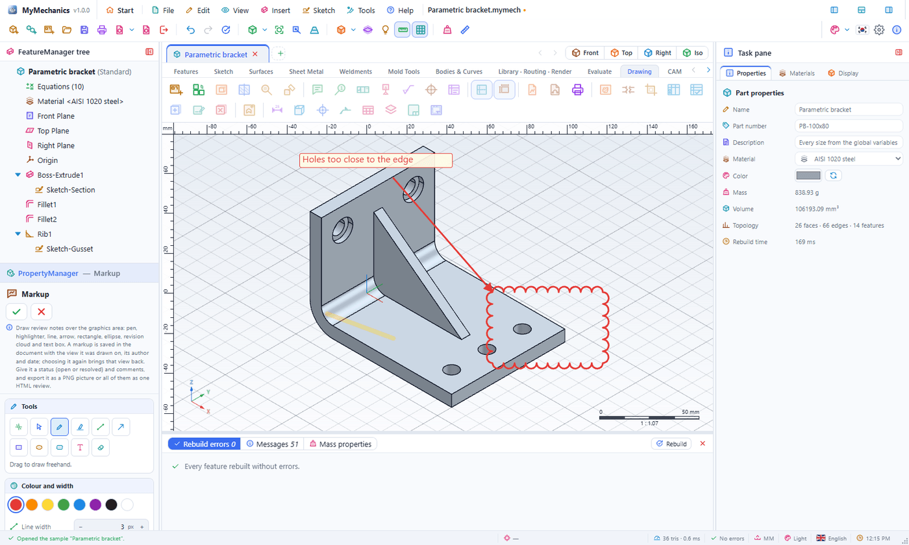